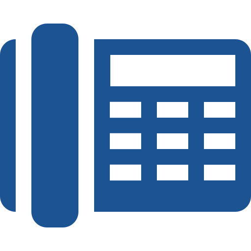
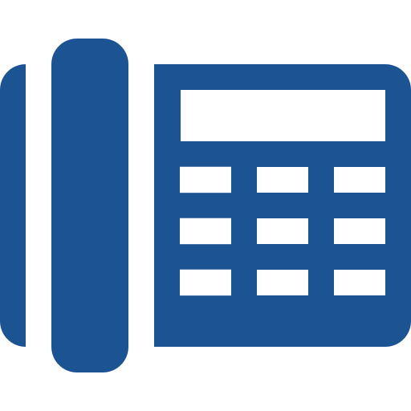

A Mútua - Caixa de Assistência dos Profissionais dos Creas - é uma sociedade civil sem fins lucrativos criada pelo Conselho Federal de Engenharia, Arquitetura e Agronomia (Confea), pela resolução nº 252 de 17 de dezembro de 1977, conforme autorização legal contida no artigo 4º da Lei 6.496 de 7 de dezembro de 1977.
O principal objetivo da Mútua é oferecer a seus associados planos de benefícios sociais, previdenciários e assistenciais, de acordo com sua disponibilidade financeira, respeitando o seu equilíbrio econômico-financeiro.
Missão
Atuar como entidade assistencial do Sistema Confea/Crea e Mútua, prestando benefícios diferenciados que propiciem melhor qualidade de vida aos mutualistas.
Negócio
Soluções em benefícios para os mutualistas.
Princípios e valores
Integridade, ética e cidadania; parcerias e relacionamentos de qualidade; serviços de excelência; valorização e desenvolvimento profissional e funcional; descentralização, unidade de ação e transparência; compromisso com a aprendizagem organizacional; inovação e compromisso com o desenvolvimento sustentável; espírito de equipe.
Visão
Ser referência na prestação de benefícios, com crescimento expressivo de associados até 2010.
Quem pode se associar à Mútua
Todos os profissionais com registro nos Conselhos Regionais de Engenharia, Arquitetura e Agronomia (Creas) - desde que atendam às condições estabelecidas em seu regimento -, além de empregados dos Creas, do Conselho Federal de Engenharia, Arquitetura e Agronomia (Confea) e da Mútua.
Como se associar à Mútua
O profissional deverá preencher o cadastro on-line, optando por uma das três categorias. Se optar por se tornar Sócio Contribuinte, deve pagar a taxa de inscrição (R$ 10) e a anuidade (R$ 130) - informe-se sobre o valor proporcional na Central de Relacionamento Mútua, telefone 0800-61-0003.
Os boletos para pagamento da taxa de inscrição e da anuidade serão enviados para o endereço que estiver selecionado no cadastro on-line (residencial ou comercial). Poderão ser pagos em qualquer agência bancária até a data do vencimento. Após a data, somente nas agências do Banco do Brasil.
Atualização cadastral
Aqueles que já são associados à Mútua e desejam atualizar seus dados cadastrais, deverá informar os dados de acesso para os Sistemas Mútua e executar as atualizações necessárias.

 
